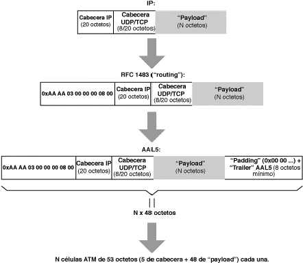

ADSL permite el acceso a servicios basados en el protocolo IP, el protocolo empleado en Internet.
Para el encaspsulado de IP sobre ATM hay varias opciones. La opción elegida inicialmente por ADSL es el encapsulado de IP sobre ATM según la RFC 1483 del IETF, con la modalidad de "routing".
En la Figura 6 se muestra el encapsulado de IP sobre ATM según la RFC 1483 (modalidad "routing"). Como se puede ver, la información útil para el usuario (el "payload" o carga útil) del paquete lleva varias cabeceras. Estas cabeceras, que son necesarias para que la información llegue a su destino, pero que no proporcionan información al usuario, son las que explica que el caudal percibido por el usuario sea inferior a la velocidad a la que la información se transmite realmente (resultados de la Figura 6: Ejemplos de caudales reales y percibidos en función de la aplicación al encapsular IP en ATM).

|
|
|
|